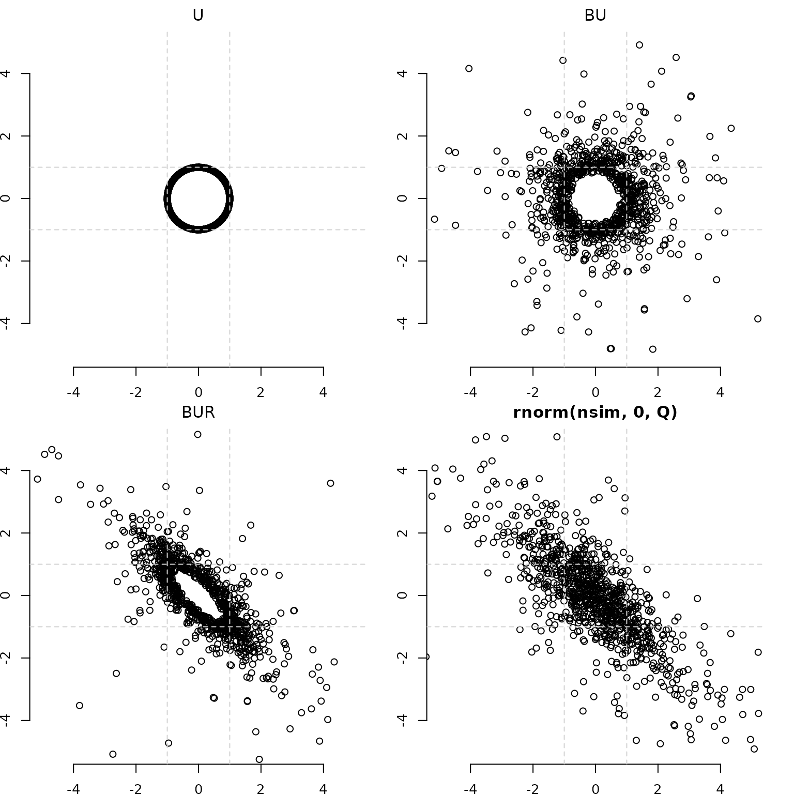

Introduction and Primer II
Start with a unit circle. End with a Bivariate Normal.
Source:vignettes/articles/intro1.Rmd
intro1.Rmd
- U is a nx2 matrix containing n random draws from the uniform circle.
- B = sqrt(A), where A is a nx1 matrix containing n i.i.d draws from its univariate distribution.
- BU can be thought of as the distribution of radii
- BUR is the result of the matrix multiplication between nx2 BU and
2x2 R, the Cholesky decomposition of a 2x2 matrix Q.
- R makes a circular (BU) into an elliptical (BUR)
- R can be thought of as a “square root” of a matrix. R’R = Q.
- When A (df=2) distribution, BUR is the bivariate normal distribution G(0,Q). Equivalently,
- When B (df=2) distribution, BUR is the bivariate normal distribution G(0,Q)